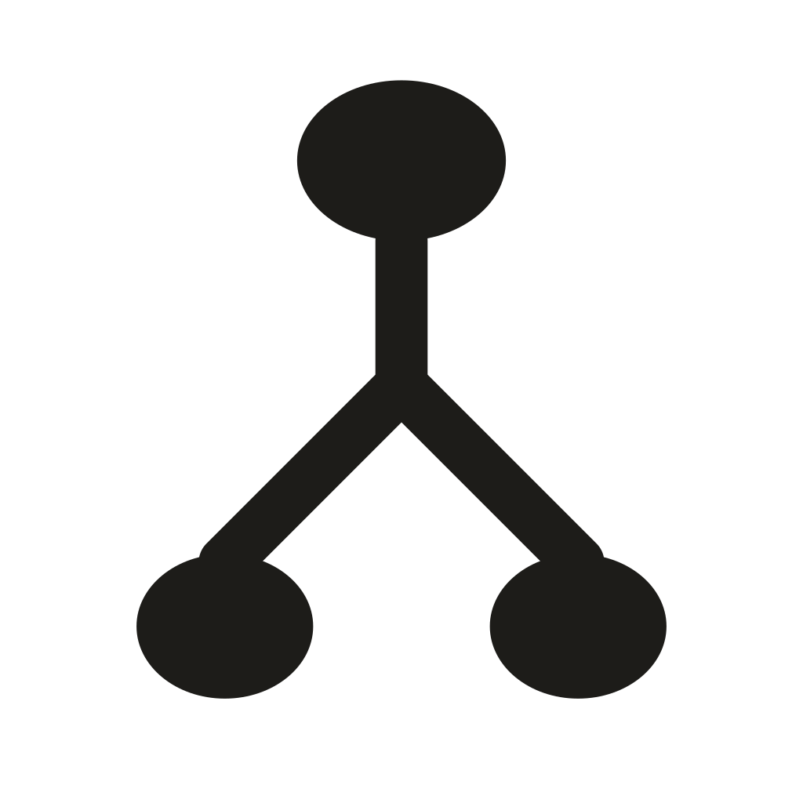

Tessera
Brand board 02 Locked
Binary strata tree · Tessera wordmark · Plain line menu glyphs
Asset inventory and usageMark family

The structure is a tree; its material is compressed stone strata. Preserve the binary fork and quiet silhouette.
Lead mark at native sizes
Wordmark and product lockup



Tessera is the product name. Identity marks belong on headers, app icons and about/login surfaces.
Menu glyphs
Plain line icons. Keep the tree out of navigation glyphs.